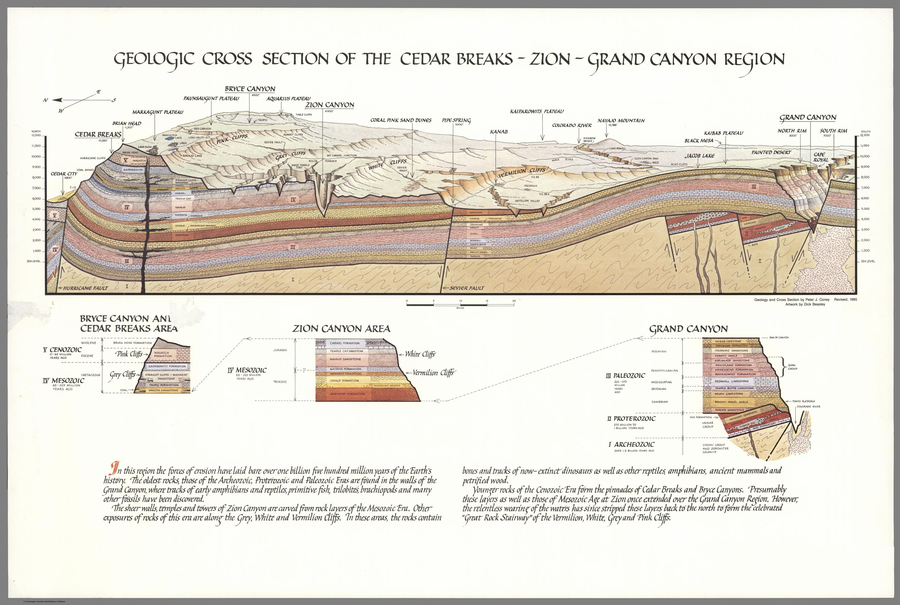
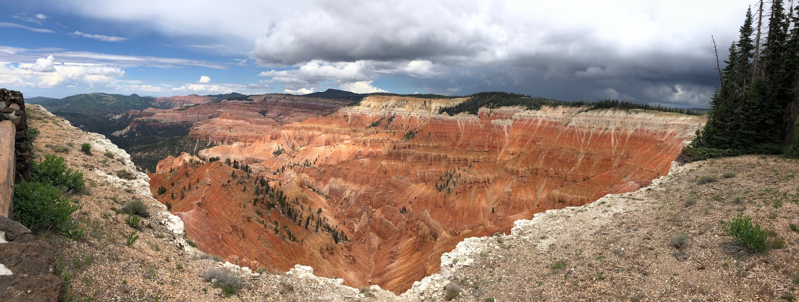

The 2018 Grand Staircase Trip
The field trip expedition was funded by a grant from the National Geographic Society, and the technology development was funded by the University of Cambridge. Kathy Ho and Dave Berry from the LABScI team at Stanford started the trip in their home state of California, with Gemma Gordon and Anil Madhavapeddy from Cambridge joining them in Nevada. This expedition during the summer of 2018 spanned the states of California, Nevada, Utah, Arizona and Colorado, with the team visiting 15 National Parks, 16 National Monuments, a number of State Parks, Historic Sites, recognised Recreation Areas, and places of interest.

By Peter Coney, from the David Rumsey Historical Map Collection
The Grand Staircase refers to a sequence of sedimentary rock layers found on the Colorado Plateau stretching from Cedar Breaks National Monument in the north, through Bryce Canyon National Park and Grand Staircase-Escalante National Monument, down into Zion National Park out to Grand Canyon National Park. In the 1870s, Geologist Clarence Dutton identified the concept of a staircase for the region, with each layer forming giant steps. He divided the formations into 5 steps going from youngest to oldest: Pink Cliffs, Grey Cliffs, White Cliffs, Vermillion Cliffs and Chocolate Cliffs. Modern geologists have since divided the steps into individual rock formations.
- Pink Cliffs
- Pink and red Claron Formation limestone found in Cedar Breaks National Monument and Bryce Canyon National Park
- Grey Cliffs
- Grey and white limestone and sandstone (lacking in iron oxide) in the Kaiparowits and Wahweap Formations round in Bryce Canyon National Park
- White Cliffs
- Navajo Sandstone found in Zion National Park, Capitol Reef National Park, Glen Canyon National Recreation Area, Grand Staircase-Escalante National Monument and Canyonlands National Park
- Vermillion Cliffs
- Formations coloured by red iron oxide and bluish manganese found in Glen Canyon National Recreation Area, Capitol Reef National Park and Grand Staircase-Escalante National Monument
- Chocolate Cliffs
- Red sandstone in the Moenkopi Formation found in Grand Canyon National Park
The formations underwent several stages through history to attain their current shapes. These sediments were deposited at different points in history, ranging from 60 million years ago in Cedar Breaks National Monument to 1.8 billion years ago in the Grand Canyon National Park, and everything in between. Then 66 million years ago, these layers underwent uplift ranging from 5,000 (at the bottom of the staircase) to 10,000 feet (at the top of the staircase) after subduction movement at the Hurricane Fault. Uplift increased the velocity and power of the Colorado River, which firstly eroded individual plateaus within the Colorado Plateau Province, and more recently (5-6 million years ago) began canyon-cutting, creating reefs and slot canyons.
- Cedar Breaks National Monument
- Located near Cedar City, Utah, Cedar Breaks is a natural amphitheatre of stripy Claron Formation sedimentary rock, 3 miles wide, and 2,000 feet deep. With elevation at over 10,000 feet above sea level, Cedar Breaks sits as the “Crown of the Grand Staircase” with a cooler alpine micro-climate and geological formations as “young” as 50 million years old. Due to its high elevation, parts of the monument are inaccessible during the winter months.
- Bryce Canyon National Park
- Technically the main feature of this park is not a canyon, but a collection of huge amphitheatres that lie on the eastern side of the Paunsaugunt Plateau. These amphitheatres are home to thousands of hoodoos formed by freeze-thaw weathering and stream erosion of the rocks in the Claron Formation. Like Cedar Breaks, the higher elevation creates a cooler weather system with more precipitation than the lower, more arid areas along the Grand Staircase.
- Grand Staircase-Escalante National Monument
- This monument is the largest managed by the Bureau of Land Management, and protects some of the most remote land in the entire US - it was the last area to be mapped in the contiguous United States. It is comprised of 3 main regions: Grand Staircase, the Kaiparowits Plateau and the Canyons of the Escalante River. Presidential proclamation in 2017 has reduced the size of the monument from 1,880,461 acres to 1,003,863. The monument is known for popular hiking trails such as slot canyons Spooky and Peekaboo Gulch, as well as numerous dinosaur fossils estimated to be over 75 million years old.
- Spooky Gulch
- This short slot canyon hike is located within Grand Staircase-Escalante National Monument, and is named for its deep, dark and extremely narrow walls. It is often combined with Peekaboo Gulch to form a fun and interesting loop.
- Peekaboo Gulch
- This is a short but physically demanding hike that requires some rock-climbing and scrambling to navigate the tight, twisty slot canyon. This fun, multi-level adventure is often combined with Spooky Gulch to make a 3.5 mile long hike.
- Zion National Park
- Featuring the prominent Zion Canyon (15 miles long and 2,640 feet deep), Zion National Park boasts unique geography and an unusual diversity of flora and fauna. Located in southwestern Utah, the Park includes mountains, canyons, buttes, mesas, rivers, slot canyons and natural arches. There are a number of well-known trails in the park such as Angels Landing (a lofty and narrow protrusion of broken sandstone), the Narrows (a narrow gorge on a fork of the Virgin River) and Weeping Rock (a water spring “weeping” through the porous Navajo Sandstone).
- Capitol Reef National Park
- This remote park is located in south-central Utah and preserves 241,904 acres of desert landscape, colourful canyons, ridges, buttes and monoliths. It is known for the 100 mile long, 65 million year old Waterpocket Fold and the white capped Navajo Sandstone cliff domes that give the park its name.
- Arches National Park
- Arches National Park is located just north of Moab, Utah, and contains the highest density of natural arches in the world (over 2,000) amidst 119 square miles of desert. An evaporite salt bed lies beneath the park, which is responsible for the sandstone fins, arches and spires in the Entrada Formation.
- Goblin Valley State Park
- Located in the San Rafael Desert, Utah, this park is known for its thousands of hoodoos known as “goblins” that litter the valley floor. The goblins are created by differential weathering of the alternating layers of sandstone, siltstone and shale that form the Entrada Sandstone deposited 170 million years ago.
- Canyonlands National Park
- Located close to Arches, and the Utah town of Moab, Canyonlands National Park preserves a landscape of canyons, mesas and buttes eroded by the Colorado and Green Rivers. The area is split by the rivers into 3 desert districts with their own character: Island in the Sky (broad, level mesa overlook), the Needles (stripy rock pinnacles), and the Maze (remote and least accessible parts).
- Natural Bridges National Monument
- Located just northwest of the Four Corners boundary in Utah, this monument contains three natural bridges: Kachina, Owachomo and Sipapu, the thirteenth largest natural bridge in the world. Natural bridges are eroded by flowing streams or rivers in the base of a canyon, and will enlarge over time until they eventually collapse under their own weight.
- Glen Canyon National Recreation Area
- This conservation area encompasses the area surrounding Lake Powell and lower Cataract Canyon, spanning the states of Utah (95%) and Arizona (5%). As the name suggests, the purpose of this land is for recreation as well as preservation (more so than in a National Park), and access to Lake Powell is provided via 5 marinas, 2 small airports, with 4 camping grounds and houseboats for summer rental. Lake Powell sits above Glen Canyon, which was flooded when the Glen Canyon Dam was completed in 1966. The GCNRA also includes the Rainbow Bridge National Monument (the world’s highest natural bridge) and Horseshoe Bend, an incised meander of the Colorado River.
- Rainbow Bridge National Monument
- Located within the Glen Canyon National Recreation Area, Rainbow Bridge is the world’s highest natural bridge, with a height of 290 feet. Historically, access to the bridge was difficult and time consuming (a difficult 3 day hike) but the popularity of activities in Glen Canyon has reduced it to a 2 hour boat ride on Lake Powell followed by a mile long walk.
- Upper Antelope Canyon
- Antelope Canyon is a famous slot canyon in Arizona, within protected Navajo land. It is split into two separate canyons, referred to as Upper Antelope Canyon or “The Crack” and Lower Antelope Canyon or “The Corkscrew”. Tours are only accessible by guided tour. Flash flooding has shaped the canyon, eroding the walls of Navajo Sandstone creating deep corridors with smooth flowing edges. Flash flooding is still common, especially during monsoon season.
- Rattlesnake Canyon
- Rattlesnake Canyon is another slot canyon, located nearby the more famous Antelope Canyon, in Arizona. It is more similar in shape to Lower Antelope Canyon than Upper Antelope Canyon, with a more dynamic twisted shape and steep areas with ladders to climb.
- Grand Canyon National Park
- The main feature of this park is the Grand Canyon, a gorge formed by the Colorado River after seismic activity uplifted the area known as the Colorado Plateau. The park is located in northwestern Arizona, and is the second most visited National Park in the USA.
Arizona
- Canyon de Chelly National Monument
- This landscape in northeastern Arizona preserves the ruins of indigenous tribes ranging from Ancestral Puebloans to the Navajo. It encompasses three major canyons: de Chelly, del Muerto and Monument, all carved by streams in the Chuska Mountains. Canyon de Chelly is owned by the Navajo Tribal Trust of the Navajo Nation, and is the only National Park Service location cooperatively managed in this way. The most distinctive feature is Spider Rock, a 750 foot high sandstone spire at the junction of Canyon de Chelly and Monument Canyon.
- Hubbell Trading Post National Historic Site
- This trading post in Arizona was built by John Lorenzo Hubbell to facilitate trade between the native Navajo people and settlers in the area. The Navajo people were forcibly relocated to New Mexico by the US government between 1864-1866 in what was called “The Long Walk of the Navajo”. The trading post represents a landmark in history after this period, where Navajo people on the newly-created reservation could sell their handmade products to ease the economic depression following the Long Walk.
- Montezuma Castle National Monument
- Located in Camp Verde Arizona, this is neither a castle (in the traditional sense) nor related to the Aztec emperor Montezuma. It is a set of well-preserved dwellings built and used by the Sinagua people between 1100-1425 AD.
- Petrified Forest National Park
- This National park straddles Navajo and Apache counties in northeastern Arizona, and is named for large accumulation of petrified wood. The south of the park is strewn with fallen trees from 225 million years ago deposited by streams flowing across the floodplain, buried quickly by sediment of the Chinle Formation, and later fossilised. The north of the park showcases eroded badlands: steep slopes deposited layers of sediment that have been extensively eroded by wind and water.
- Sunset Crater Volcano National Monument
- Sunset Crater Volcano is a cinder cone located just north of Flagstaff, Arizona. It erupted in 1085 AD, spewing lava and ash that caused the local Sinagua to abandon their settlements. The volcano is the youngest of the San Francisco Volcanic Field, and while it is considered extinct, other volcanoes in the string are active, with eruption in the future very likely.
- Tuzigoot National Monument
- This monument preserves a 3-story pueblo ruin containing 110 rooms, built above the Verde River floodplain in Arizona. Tuzigoot is Apache for “crooked water” and possibly refers to Pecks Lake nearby.
- Walnut Canyon National Monument
- This 600 feet deep canyon just southeast of Flagstaff, Arizona is known for the cliff dwellings built by the Sinagua people. Several species of walnut trees call the canyon home, and maintained trails provide access for tourists to view the dwellings up close.
- Wupatki National Monument
- Located near Flagstaff, Arizona, this monument is rich in Native American ruins, with settlements built by the Ancient Pueblo People (Cohonina, Kayenta Anasazi and Sinagua). Wupatki means “Tall House” in Hopi, and may refer to the largest structure on the site, a multi-story Sinagua pueblo dwelling comprising over 100 rooms.
California
- César E. Chávez National Monument
- This monument commemorates Latino civil rights activist, César E. Chávez who was instrumental in establishing the country’s first permanent agricultural union. The site includes the headquarters of the United Farm Workers (UFW), César’s home, memorial garden and gravesite.
- Death Valley National Park
- This park straddles the California and Nevada border, east of the Sierra Nevada. It is the largest National Park in the lower 48 states, and is the hottest, driest and lowest (in terms of sea level) park in the USA. It is known for its harsh desert environment, valleys, canyons and mountains, with 91% of the park designated wilderness area.
- Devils Postpile National Monument
- An unusual formation of columnar basalt located near Mammoth Mountain in eastern California. The monument also protects Rainbow Falls waterfall on the middle fork of the San Joaquin River.
- Joshua Tree National Park
- Named for the Joshua Trees native to the Mojave Desert, this National Park lies just east of Los Angeles, near Palm Springs, California. It includes parts of the elevated Mojave Desert, and the lower Colorado Desert, with ecosystems distinct to each. The Mojave Desert section features lots of loose boulders suitable for climbing and scrambling, and sparse flatland with the distinctive Joshua Trees. The Colorado Desert section showcases mixed bush scrub, areas of dense cactus and desert dunes.
- Kings Canyon National Park
- Jointly administered with Sequoia National Park, this park is named for Kings Canyon, the glacier-carved valley over 1,600 meters deep. The majority of the park is designated wilderness, and Grant Grove is home to the second largest tree in the world, giant sequoia General Grant.
- Manzanar National Historic Site
- One of 10 American internment camps where 110,000 Japanese Americans were held during World War II from 1942-1945. It is located at the foot of the Sierra Nevada in California. Manzanar translates as “apple orchard” in Spanish, and before the war was an area inhabited first by Native Americans, and later by European Americans.
- Mojave National Preserve
- Located in the Mojave Desert in California this preserve protects 1,600,000 acres of land including the Kelso Dunes, Marl Mountains, Cima Dome and volcanic features such as Hole-in-the-Wall and the Cinder Cone Lava Beds.
- Sequoia National Park
- Located in the southern Sierra Nevada, California, this park protects 404,064 acres of forested mountain terrain. Sequoia is south of, and contiguous with Kings Canyon National Park. Known for its old-growth giant sequoia forests, the park encompasses the Front Country (accessible woodlands and grasslands) and the Back Country (a roadless, wilderness accessible only by foot or horse).
- Yosemite National Park
- Located in the western Sierra Nevada of Central California Yosemite is known for its waterfalls, granite cliffs, deep valleys, ancient giant sequoia groves and meadows. Almost 95% of the park is designated wilderness.
Colorado
- Canyon of the Ancients National Monument
- Located just west of Pleasant View, Colorado, the site is managed by the Bureau of Land Management and contains the highest known density of archaeological sites (30,000) in the USA, with well-preserved evidence of native cultures. Examples include field houses, check dams, cliff dwellings, shrines, petroglyphs and agricultural fields.
- Hovenweep National Monument
- Hovenweep actually covers land in both Colorado and Utah, and is known for the six groups of Ancestral Puebloan villages that were occupied until the 14th century. There is also evidence of occupation by hunter-gatherers from 6,000 BC-200 AD. The monument has also been designation as an International Dark Sky Park.
- Mesa Verde National Park
- The park in Colorado protects some of the best-preserved Ancestral Puebloan archaeological sites in the USA, including the well known Cliff Palace structures.
- Navajo National Monument
- The monument is located in the northwest portion of the Navajo Nation in northern Arizona, and preserves 3 cliff dwellings of the Ancestral Puebloan People: Broken Pottery, Ledge House and Inscription House.
- Pipe Spring National Monument
- The water of Pipe Spring was crucial to the survival of the Ancestral Puebloans and Paiute Indians for 1,000 years. The Mormon missionary expedition of 1860s also settled here and started a large cattle ranching operation. The site details the human history of the area over time, acting primarily as a memorial to western pioneer life.
Nevada
- Valley of Fire State Park
- This nature preservation area is located just south of Overton, Nevada, and is named for the red Aztec Sandstone formed from sand dunes 150 million years ago. Under full sun, these rock formations appear to be on fire. This park is Nevada’s oldest state park, and lies within the Mojave Desert.
Cedar Breaks National Monument
Gemma and Anil flew over from Cambridge to meet meet Kathy and Dave in Las Vegas, and then we all drove north east towards Utah, and onto the Colorado Plateau. The first park we came to was Cedar Breaks National Monument, in Iron County, Utah. We grabbed our equipment and joined the Wildflower Walk through the alpine sections that run along the rim of the amphitheatre. During the walk Park Rangers identified and described all of the local flowers, plants and trees and noted that temperatures at the top of the plateau are gradually increasing, affecting the flora and fauna. After our picnic lunch we listened to the Geology Ranger talk, and captured footage of the amphitheatre before a huge storm rolled in.

Cedar Breaks as a storm rolls in
Cedar Breaks was established as a National Monument in 1933, and is formed of a natural amphitheatre with multicoloured cliffs consisting of shale, limestone and sandstone. As with its sister park Bryce Canyon National Park, arches, windows and hoodoos are in abundance. Interestingly, there are no cedar trees here at all - it’s likely that settlers mistook the many juniper trees for cedar, and the name stuck.
- Geology
- Cedar Breaks is located at the top of the Grand Staircase, standing at over 10,000 feet above sea level. Compared to the Grand Canyon (1.8 billion years old) which forms the bottom of the staircase, it’s rather young at only 50-60 million years old. As with the whole area of the Colorado Plateau, the amphitheatre here was formed from a combination of processes: deposition, uplift and subsequent erosion.
- Deposition
- 60 million years ago, Cedar Breaks was a flat area of land that lay between a shallow sea to the east, and huge mountain ranges to the west. Shale, limestone and sandstone were deposited at the bottom of an ancient lake here (Lake Claron), together with trace amounts of iron. Deposition continued for ~25 million years, creating the vibrant layers of the Claron Formation (deep red, warm orange and dusky pink) capped with white tuff formed from settled volcanic ash ejected and blown 100 miles east from Nevada ~30 million years ago.
- Uplift
- Nearby tectonic activity continued, and ~20 million years ago subduction at the Hurricane Fault caused the Colorado Plateau to uplift and tilt, elevating Cedar Breaks by 8,000 feet. This uplift uncovered the compacted layers of sedimentary rock, fracturing them in places and exposing them to the elements.
- Erosion
- The Colorado River (along with other rivers) is responsible for creating canyons throughout the length of the Grand Staircase, but there are other forms of erosion that take place at the upper elevations. As with Bryce Canyon (not actually a “real” canyon), the different geologic formations visible at Cedar Breaks are formed by a combination of falling rain, freezing ice and gravity. Falling acid rain seeps into fissures in the rock formations and reacts with the calcium carbonate present in the layered Claron formation, and slowly dissolves the limestone, enlarging the gaps further. The temperature commonly drops below freezing, and this water turns to ice expanding the fracture further, then melts and erodes the rock as it follows gravity down. This repeated action of freeze-thaw forces the rocks to break and fracture further, creating fins, arches, hoodoos and windows.
Grand Staircase-Escalante National Monument
One of the most iconic hikes here is the Spooky Gulch slot canyon. We processed some early footage of our hike through the slot canyon, which you can view in a VR headset or by scrolling around with your mouse.
Capitol Reef National Park